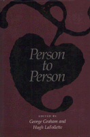

<body bgcolor="#FFFFFF" text="#000000" link="#0000FF" vlink="#CC0000" alink="#CC0000"><center><hr width="350" size="1" align="center" noshade>Presenting stimulating and divergent views on questions concerning morality in personal relationships<hr width="350" size="1" align="center" noshade><p><a href="https://cdcshoppingcart.uchicago.edu/Cart/ChicagoBook.aspx?ISBN=9780877225768&&PRESS=temple" target="_top">Buy this book!</a> | <a href="https://cdcshoppingcart.uchicago.edu/Cart/Cart.aspx?PRESS=temple" target="_top">View Cart</a> | <a href="https://cdcshoppingcart.uchicago.edu/Cart/Cart.aspx?PRESS=temple" target="_top">Check Out</a></p><p></p></center><!--none//--><h1>Person to Person</h1>
<h3>edited by George Graham and Hugh LaFollette</h3>
<P>cloth 0-87722-576-1 $34.95, Jan 89, <FONT COLOR=#990033>Out of Print</FONT>
<BR> 336 pp
</P><BLOCKQUOTE><I>"Concern about personal relations is widespread and cross-disciplinary, and the topic can certainly benefit from the rigorous analysis that philosophers are able to apply to it.... Nothing has been published in this area with the scope of this anthology."</I>
<br>&#151<b>Jeffrey Blustein</b>, Mercy College<I></I></BLOCKQUOTE>
<p>This collection of mostly original essays presents stimulating and divergent views on questions concerning morality in personal relationships. Clear, readable, and empirically informed, the contributions&#151by philosophers and psychologists&#151examine conflicts between intimates, apparent differences in the morality between intimates and more impersonal morality, and ideals of love, friendship, and family.
<BR>&nbsp;<h2>Reviews</h2>
<p><I>"A valuable introduction to the philosophy and psychology of personal relationships."</I>
<br>&#151<b><I>Ethics</I></b>
<BR>&nbsp;<h2>Contents</h2><P>
<p><b>Part I: The Nature and Value of Personal Relationships</b>
<br>1. The Essence of Personal Relationships and Their Value for the Individual &#150 Paul H. Wright
<br>2. Adult Friendships &#150 Barry McCarthy
<br>3. Morality, Parents, and Children &#150 James Rachels
<br>4. In Search of an Ethics of Personal Relationships &#150 John Hardwig
<br>5. Philosophers Against the Family &#150 Christina Hoff Sommers
<br>6. Morality and Personal Relations &#150 John Deigh
<br>7. Love’s Way &#150 Richard Garrett
<p><b>Part II: Making Relationships Work</b>
<br>8. The Repair and Maintenance of Relationships &#150 Robin Gilmour and Tuvia Melamed
<br>9. Honesty and Intimacy &#150 George Graham and Hugh LaFollette
<br>10. Friends and Lovers &#150 Laurence Thomas
<br>11. Commitment and the Value of Marriage &#150 Gordon Graham
<br>12. Adolescent Confidentiality and Family Privacy &#150 Ferdinand Schoeman
<br>13. Paternalism Towards Friends &#150 Norvin Richards
<br>14. Of Jealousy and Envy &#150 Daniel M. Farrell
<br>15. Trusting Ex-Intimates &#150 Annette Baier
</P><BR>&nbsp;<H2>About the Author(s)</H2>
<P><b>George Graham</b> is Associate Professor and Chair of the Philosophy Department at the University of Alabama at Birmingham.</P>
<P><b>Hugh LaFollette</b> is Associate Professor of Philosophy at East Tennessee State University.</P>
<BR><H2>Subject Categories</H2>
<p><A HREF="/tempress/philosophy.html" TARGET="_top">Philosophy and Ethics</a>
<BR><A HREF="/tempress/psycho.html" TARGET="_top">Psychology</a>
</p>
<p align="center"><a href="https://cdcshoppingcart.uchicago.edu/Cart/ChicagoBook.aspx?ISBN=9780877225768&&PRESS=temple" target="_top">Buy this book!</a> | <a href="https://cdcshoppingcart.uchicago.edu/Cart/Cart.aspx?PRESS=temple" target="_top">View Cart</a> | <a href="https://cdcshoppingcart.uchicago.edu/Cart/Cart.aspx?PRESS=temple" target="_top">Check Out</a></p><p><font face="Arial" size="1"><a href="copyright.html" onMouseOver="window.status='Web Copyright Policy';return true;" onMouseOut="window.status=''" title="Web Copyright Policy">&copy;</a> 2015 <a href="http://www.temple.edu" target="new" onMouseOver="window.status='Link to Temple University home page';return true;" onMouseOut="window.status=''" title="Link to Temple University home page">Temple University</a>. All Rights Reserved. http://www.temple.edu/tempress/titles/511_reg.html</font></p>